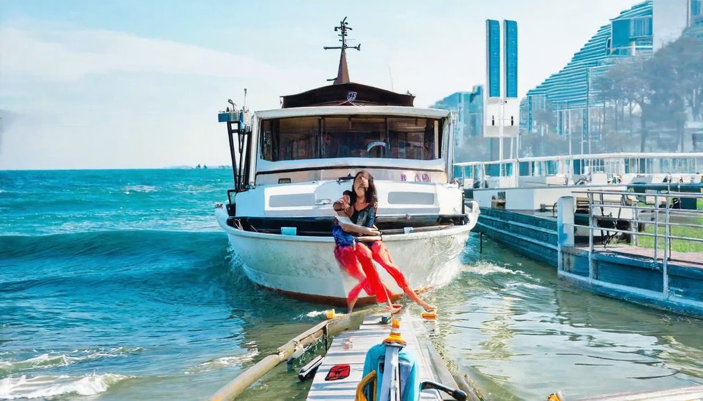
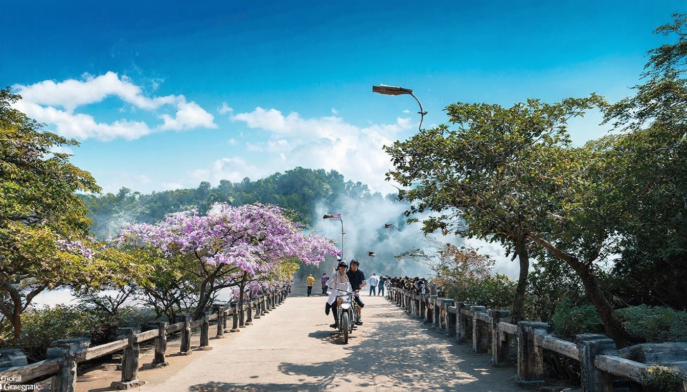
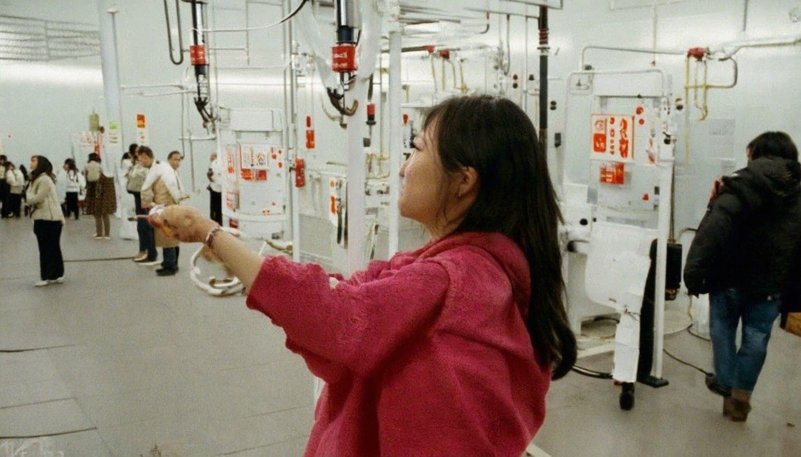
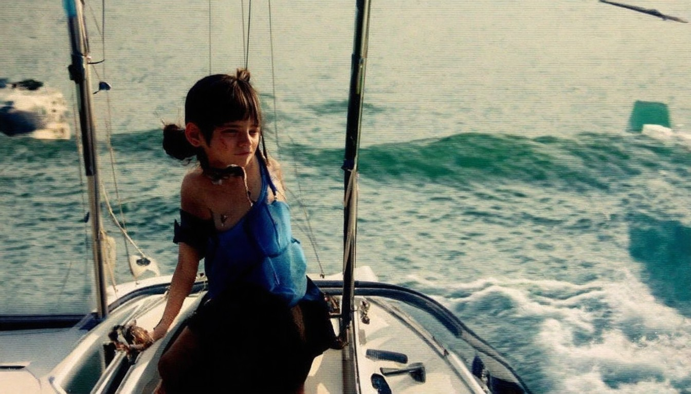
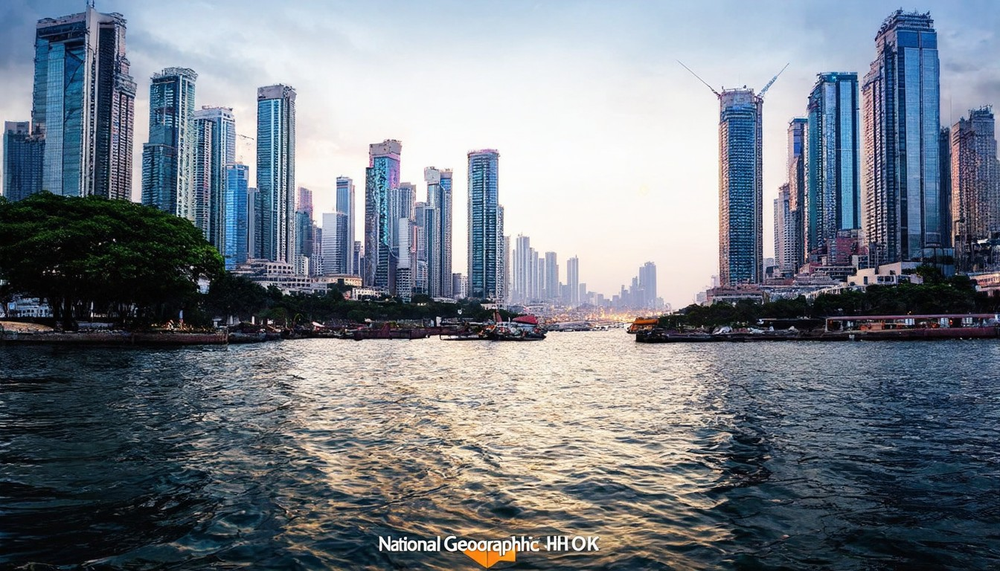

2026年04月13日全球热点新闻 - 今日头条
美伊伊斯兰堡会谈因核问题无果而终，特朗普宣布美东时间4月13日10时起，美军对所有进出伊朗港口的海上交通实施封锁，涵盖波斯湾和阿曼湾，引发国际油价开盘
2026年04月15日 · 全球热点速递
← 返回今日新闻
美伊伊斯兰堡会谈因核问题无果而终，特朗普宣布美东时间4月13日10时起，美军对所有进出伊朗港口的海上交通实施封锁，涵盖波斯湾和阿曼湾，引发国际油价开盘

加沙地带医疗服务系统本来已经因两年多的战事不堪重负，日前以色列阻止燃油和发电机零配件进入当地，更令情况雪上加霜。医院每月大约需要2500升燃油才能维持
今日國際新聞重點：美以襲伊朗特朗普：將助處理霍爾木茲海峽問題創造巨大財富｜中方樂見美伊達成停火續為中東地區和平作貢獻｜無綫新聞｜TVB News｜2026/04/08.
... 2026-04-15 16:32. 估擁數十枚核彈頭！北韓核武產能顯著提升運作多個鈾濃縮設施. 國際原子能總署（IAEA）署長葛羅西今天訪問首爾期間表示，北韓製造核武的能力正呈現
[](https://www.rfi.fr/cn/%E4%B8%AD%E5%9B%BD/20260414-%E4%B8%AD%E5%9B%BD%E5%A4
本網站使用相關技術提供更好的閱讀體驗，同時尊重使用者隱私，點這裡瞭解中央社隱私聲明。當您關閉此視窗，代表您同意上述規範。. Your browser does not appear to support Traditional Chinese. Would you like to go to CNA’s English website, “Focus Taiwan”? + [阿提米絲2號太空人返回

# 新唐人電視台 新唐人電視台. 里昂主流：被「善」托向高處 仿佛置身另一世界. 【健康1+1】無糖 ≠ 健康 腎臟最怕這樣喝茶. 【健康1+1】無糖 ≠ 健康 腎臟最怕這樣喝茶. 【兩岸掃描】中國房地產持續低迷 官媒捧「小陽春」難掩不景氣. 【兩岸掃描】中國房地產持續低迷 官媒捧「小陽春」難掩不景氣. 【新聞大家談】突發！川普：堅決不要核武 談不成或斬首！. 【新聞大家談】突發！川普：堅決不要核
## Explore the ABC. ### ABC News. ### ABC iview. ### ABC listen. ### Information & Services. #### Your ABC Account. # 头条：普京称世界正变得更加危险 但未提及马杜罗和伊朗. 这是普京今年首次就外交政策问题公开表态，但并未点名提及美国或特朗普。 (Reuters: Sputnik/A
# 【时事纵横】突发！全面封锁伊朗 美军上膛待命！. 【新唐人北京时间2026年04月13日讯】今日焦点：突发：美军封锁伊朗所有港口！伊朗部署特种部队，霍尔木兹大战一触即发？美伊谈判破局，万斯提出美国六项红线！ 匈牙利变天，震动欧洲！. 聆听名家观点，看清世界风云。大家好，欢迎收看《时事纵横》，我是金石。今天是4月13日，周一。. 美伊谈判破裂，伊朗的局势面临十字路口。就在此刻，美东时间的上午10
## [美3月PPI升幅遠低於預估 貿易品價格跌](https://www.worldjournal.com/wj/story/121477/9441826?from=wj_msg "美3月PPI升幅遠低於預估 貿易品價格跌"). ## [郵輪弒親案 16歲弟性侵殺害18歲繼姊 檢以成人起訴](https://www.worldjournal.com/wj/story/121469/9441729
* [RSS](https://cn.nikkei.com/rss.html). * [特朗普的美国](https://cn.nikkei.com/top/20250403.html). * [中日深度观察](https://cn.nikkei.com/top/2019-08-29-06-18-57.html). * [日本游](https://cn.nikkei.com/top/

45%失智可以被預防護腦飲食降低認知退化醫：吃對讓大腦年輕4歲 · 全被看光FT：伊朗秘密接手中國衛星鎖定中東美軍基地 · 中東戰爭IMF下修全球經濟成長率示警通膨 · 福斯主播爆料:
# 首页. ## 头条新闻. #### 谁发明了 “去风险”？. #### 专访：德国需要制定明智的中国战略. #### 梅尔茨访华：在经贸合作与“去风险”之间寻找平衡. ## 每日新闻. ### 伊战影响：中国3月出口同比增幅锐减. ### 商界提议香港学校用普通话教学. ### 孙卫东被免去外交部副部长职务. ### 人权律师余文生刑满获释 25家国际组织发表联署声明. ### 涉恒大诈欺、行

香港財經新聞網站，提供即時新聞、財經新聞、兩岸新聞、國際新聞、地產、科技及時事資訊，助您掌握新聞資訊及做好分析。
伊朗战争冲击 中国3月出口放缓 经济承压伊朗战争冲击 中国3月出口放缓 经济承压. 中共惠台10政策 专家：实为统战糖衣陷阱中共惠台10政策 专家：实为统战糖衣陷阱. 分析：美登月计划不仅是探索 更是战略博弈分析：美登月计划不仅是探索 更是战略博弈. 分析：排除中共网络威胁 美FCC祭重拳分析：排除中共网络威胁 美FCC祭重拳. 【直播】赫尔辛基委员会简报会：梵蒂冈的外交【直播】赫尔辛基委员会简报
伊朗和談前突然提出條件特朗普指對方毫無籌碼| 本國三月失業率維持6.7% | 本國國民生育意欲回升| 習近平晤國民黨主席鄭麗文促兩岸統一| 海地疑犯涉
新华每日电讯 经济参考 瞭望 半月谈 中证报 上证报 中国记者 中国名牌 中国传媒科技 环球 瞭望东方周刊 参考消息 新华出版社. 北京 天津 河北 山西 辽宁 吉林 上海 江苏 浙江 安徽 福建 江西 山东 河南 湖北 湖南 广东 广西 海南 重庆 四川 贵州 云南 西藏 陕西 甘肃 青海 宁夏 新疆 内蒙古
*  ### [菲律宾指控中国渔民在南海倾倒氰化物](https://www.bbc.com/zhongwen/

舒華、柯震東爆密戀⋯兩年前同框照被挖出「I Love You」互動太曖昧 · 柯震東戀情卡關內幕曝光！ 被爆帶舒華見家長粉絲壓力成關鍵 · 柯震東爆秘戀舒華1年！苦學韓文「背後動機」